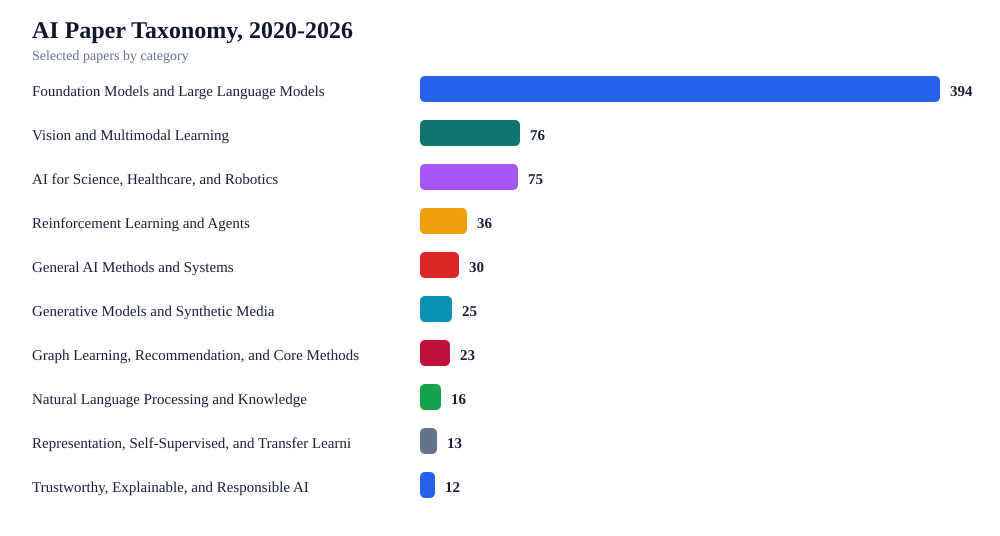
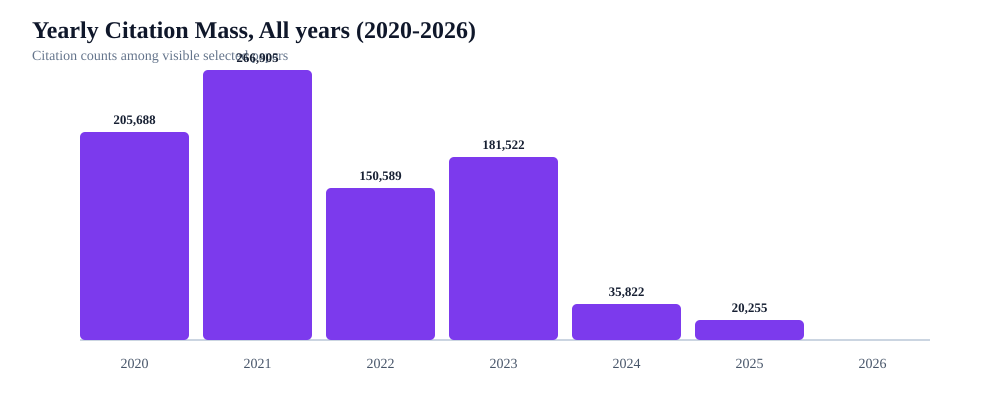

A taxonomy-first, citation-ranked map of AI research from 2020 through 2026. Each year investigates up to 1,000 candidate papers; the final collection selects the top 100 papers overall by citation count.
100selected papers
6years represented
860,781citation count total
8topic categories
Keywords Convention
These clickable keyword tags define the AI-specific convention used to scan, filter, and extend this collection.
Selected keyword: all | Matching papers: 100 papers
Taxonomy
Total selected papers: 100 papers; Categories: 8 categories.
Each taxonomy section lists papers with publication year, venue, citation count, influential citations, score, keywords, key idea, strengths, research-focused limitations, and paper links. Sections are collapsed by default.

Category distribution (2020-2026)

Yearly citation mass (2020-2026)
Foundation Models and Large Language Models67 papers2020-2025500,006 citations
Top paper:Language Models are Few-Shot Learners
Category Overview
The main trend is a shift from task-specific NLP systems toward general-purpose foundation models that transfer across tasks through prompting, retrieval, and instruction tuning.
Scaling laws, retrieval augmentation, alignment, and data governance are now central design axes rather than afterthoughts.
Citation-ranked work tends to emphasize architectures, pretraining corpora, benchmark behavior, and broad capability evaluation.
Limitations
Capability gains are difficult to separate from data scale, benchmark leakage, and evaluation prompt sensitivity.
Alignment and safety claims often need stronger real-world and multilingual validation.
Compute-intensive training can limit reproducibility and concentrate follow-up work around a small number of institutions.
Tom B. Brown, Benjamin Mann, Nick Ryder, Melanie Subbiah, J. Kaplan, Prafulla Dhariwal, Arvind Neelakantan, Pranav Shyam, et al.
2020Neural Information Processing Systems59,605 citations5,279 influentialscore 372.905taxonomy #1
foundation-modelsnlp
Key idea:Recent work has demonstrated substantial gains on many NLP tasks and benchmarks by pre-training on a large corpus of text followed by fine-tuning on a specific task.
Strengths:high citation signal (59,605); influential citation signal (5,279)
Limitations:Capability gains are difficult to separate from data scale, benchmark leakage, and evaluation prompt sensitivity.; Alignment and safety claims often need stronger real-world and multilingual validation.; Compute-intensive training can limit reproducibility and concentrate follow-up work around a small number of institutions.
Long Ouyang, Jeff Wu, Xu Jiang, Diogo Almeida, Carroll L. Wainwright, Pamela Mishkin, Chong Zhang, S. Agarwal, et al.
2022Neural Information Processing Systems21,755 citations2,276 influentialscore 345.957taxonomy #2
foundation-modelsnlpreinforcement-learning
Key idea:Making language models bigger does not inherently make them better at following a user's intent.
Strengths:high citation signal (21,755); influential citation signal (2,276)
Limitations:Capability gains are difficult to separate from data scale, benchmark leakage, and evaluation prompt sensitivity.; Alignment and safety claims often need stronger real-world and multilingual validation.; Compute-intensive training can limit reproducibility and concentrate follow-up work around a small number of institutions.
Key idea:We introduce LLaMA, a collection of foundation language models ranging from 7B to 65B parameters.
Strengths:high citation signal (20,427); influential citation signal (2,131)
Limitations:Capability gains are difficult to separate from data scale, benchmark leakage, and evaluation prompt sensitivity.; Alignment and safety claims often need stronger real-world and multilingual validation.; Compute-intensive training can limit reproducibility and concentrate follow-up work around a small number of institutions.
2021International Conference on Learning Representations20,108 citations2,862 influentialscore 340.431taxonomy #4
foundation-modelsnlp
Key idea:An important paradigm of natural language processing consists of large-scale pre-training on general domain data and adaptation to particular tasks or domains.
Strengths:high citation signal (20,108); influential citation signal (2,862)
Limitations:Capability gains are difficult to separate from data scale, benchmark leakage, and evaluation prompt sensitivity.; Alignment and safety claims often need stronger real-world and multilingual validation.; Compute-intensive training can limit reproducibility and concentrate follow-up work around a small number of institutions.
Jason Wei, Xuezhi Wang, Dale Schuurmans, Maarten Bosma, Ed H. Chi, F. Xia, Quoc Le, Denny Zhou
2022Neural Information Processing Systems19,316 citations1,316 influentialscore 335.676taxonomy #5
foundation-modelsnlp
Key idea:We explore how generating a chain of thought -- a series of intermediate reasoning steps -- significantly improves the ability of large language models to perform complex reasoning.
Strengths:high citation signal (19,316); influential citation signal (1,316)
Limitations:Capability gains are difficult to separate from data scale, benchmark leakage, and evaluation prompt sensitivity.; Alignment and safety claims often need stronger real-world and multilingual validation.; Compute-intensive training can limit reproducibility and concentrate follow-up work around a small number of institutions.
Key idea:In this work, we develop and release Llama 2, a collection of pretrained and fine-tuned large language models (LLMs) ranging in scale from 7 billion to 70 billion parameters.
Strengths:high citation signal (17,320); influential citation signal (2,177)
Limitations:Capability gains are difficult to separate from data scale, benchmark leakage, and evaluation prompt sensitivity.; Alignment and safety claims often need stronger real-world and multilingual validation.; Compute-intensive training can limit reproducibility and concentrate follow-up work around a small number of institutions.
Key idea:Modern artificial intelligence (AI) systems are powered by foundation models.
Strengths:high citation signal (16,216); influential citation signal (3,038)
Limitations:Capability gains are difficult to separate from data scale, benchmark leakage, and evaluation prompt sensitivity.; Alignment and safety claims often need stronger real-world and multilingual validation.; Compute-intensive training can limit reproducibility and concentrate follow-up work around a small number of institutions.
Patrick Lewis, Ethan Perez, Aleksandara Piktus, F. Petroni, Vladimir Karpukhin, Naman Goyal, Heinrich Kuttler, M. Lewis, et al.
2020Neural Information Processing Systems15,004 citations1,402 influentialscore 322.004taxonomy #8
foundation-modelsnlp
Key idea:Large pre-trained language models have been shown to store factual knowledge in their parameters, and achieve state-of-the-art results when fine-tuned on downstream NLP tasks.
Strengths:high citation signal (15,004); influential citation signal (1,402)
Limitations:Capability gains are difficult to separate from data scale, benchmark leakage, and evaluation prompt sensitivity.; Alignment and safety claims often need stronger real-world and multilingual validation.; Compute-intensive training can limit reproducibility and concentrate follow-up work around a small number of institutions.
Key idea:We introduce Codex, a GPT language model fine-tuned on publicly available code from GitHub, and study its Python code-writing capabilities.
Strengths:high citation signal (10,122); influential citation signal (1,555)
Limitations:Capability gains are difficult to separate from data scale, benchmark leakage, and evaluation prompt sensitivity.; Alignment and safety claims often need stronger real-world and multilingual validation.; Compute-intensive training can limit reproducibility and concentrate follow-up work around a small number of institutions.
Key idea:Instruction tuning large language models (LLMs) using machine-generated instruction-following data has improved zero-shot capabilities on new tasks, but the idea is less explored in the multimodal field.
Strengths:high citation signal (9,932); influential citation signal (1,598); open-access PDF metadata
Limitations:Capability gains are difficult to separate from data scale, benchmark leakage, and evaluation prompt sensitivity.; Alignment and safety claims often need stronger real-world and multilingual validation.; Compute-intensive training can limit reproducibility and concentrate follow-up work around a small number of institutions.
Lianmin Zheng, Wei-Lin Chiang, Ying Sheng, Siyuan Zhuang, Zhanghao Wu, Yonghao Zhuang, Zi Lin, Zhuohan Li, et al.
2023Neural Information Processing Systems9,220 citations1,218 influentialscore 317.324taxonomy #11
foundation-modelsnlptrustworthy-ai
Key idea:Evaluating large language model (LLM) based chat assistants is challenging due to their broad capabilities and the inadequacy of existing benchmarks in measuring human preferences.
Strengths:high citation signal (9,220); influential citation signal (1,218)
Limitations:Capability gains are difficult to separate from data scale, benchmark leakage, and evaluation prompt sensitivity.; Alignment and safety claims often need stronger real-world and multilingual validation.; Compute-intensive training can limit reproducibility and concentrate follow-up work around a small number of institutions.
Rafael Rafailov, Archit Sharma, E. Mitchell, Stefano Ermon, Christopher D. Manning, Chelsea Finn
2023Neural Information Processing Systems9,211 citations1,981 influentialscore 314.108taxonomy #12
foundation-modelsnlpreinforcement-learning
Key idea:While large-scale unsupervised language models (LMs) learn broad world knowledge and some reasoning skills, achieving precise control of their behavior is difficult due to the completely unsupervised nature of their training.
Strengths:high citation signal (9,211); influential citation signal (1,981)
Limitations:Capability gains are difficult to separate from data scale, benchmark leakage, and evaluation prompt sensitivity.; Alignment and safety claims often need stronger real-world and multilingual validation.; Compute-intensive training can limit reproducibility and concentrate follow-up work around a small number of institutions.
Chitwan Saharia, William Chan, Saurabh Saxena, Lala Li, Jay Whang, Emily L. Denton, Seyed Kamyar Seyed Ghasemipour, Burcu Karagol Ayan, et al.
2022Neural Information Processing Systems8,468 citations482 influentialscore 301.492taxonomy #13
foundation-modelsgenerative-aimultimodalnlpvision
Key idea:We present Imagen, a text-to-image diffusion model with an unprecedented degree of photorealism and a deep level of language understanding.
Strengths:high citation signal (8,468); influential citation signal (482); open-access PDF metadata
Limitations:Capability gains are difficult to separate from data scale, benchmark leakage, and evaluation prompt sensitivity.; Alignment and safety claims often need stronger real-world and multilingual validation.; Compute-intensive training can limit reproducibility and concentrate follow-up work around a small number of institutions.
Junnan Li, Dongxu Li, S. Savarese, Steven C. H. Hoi
2023International Conference on Machine Learning8,331 citations956 influentialscore 315.706taxonomy #14
foundation-modelsgenerative-aimultimodalnlpvision
Key idea:The cost of vision-and-language pre-training has become increasingly prohibitive due to end-to-end training of large-scale models.
Strengths:high citation signal (8,331); influential citation signal (956); recognized venue; open-access PDF metadata
Limitations:Capability gains are difficult to separate from data scale, benchmark leakage, and evaluation prompt sensitivity.; Alignment and safety claims often need stronger real-world and multilingual validation.; Compute-intensive training can limit reproducibility and concentrate follow-up work around a small number of institutions.
Key idea:We study empirical scaling laws for language model performance on the cross-entropy loss.
Strengths:high citation signal (8,259); influential citation signal (586)
Limitations:Capability gains are difficult to separate from data scale, benchmark leakage, and evaluation prompt sensitivity.; Alignment and safety claims often need stronger real-world and multilingual validation.; Compute-intensive training can limit reproducibility and concentrate follow-up work around a small number of institutions.
A. Chowdhery, Sharan Narang, Jacob Devlin, Maarten Bosma, Gaurav Mishra, Adam Roberts, P. Barham, Hyung Won Chung, et al.
2022Journal of machine learning research8,107 citations426 influentialscore 308.808taxonomy #16
foundation-modelsnlptrustworthy-ai
Key idea:Large language models have been shown to achieve remarkable performance across a variety of natural language tasks using few-shot learning, which drastically reduces the number of task-specific training examples needed to adapt the model to a particular application.
Strengths:high citation signal (8,107); influential citation signal (426); recognized venue
Limitations:Capability gains are difficult to separate from data scale, benchmark leakage, and evaluation prompt sensitivity.; Alignment and safety claims often need stronger real-world and multilingual validation.; Compute-intensive training can limit reproducibility and concentrate follow-up work around a small number of institutions.
Key idea:Foundation models, now powering most of the exciting applications in deep learning, are almost universally based on the Transformer architecture and its core attention module.
Strengths:high citation signal (7,634); influential citation signal (1,163)
Limitations:Capability gains are difficult to separate from data scale, benchmark leakage, and evaluation prompt sensitivity.; Alignment and safety claims often need stronger real-world and multilingual validation.; Compute-intensive training can limit reproducibility and concentrate follow-up work around a small number of institutions.
Emily M. Bender, Timnit Gebru, Angelina McMillan-Major, Shmargaret Shmitchell
2021Conference on Fairness, Accountability and Transparency7,559 citations304 influentialscore 286.558taxonomy #18
foundation-modelsnlptrustworthy-ai
Key idea:The past 3 years of work in NLP have been characterized by the development and deployment of ever larger language models, especially for English.
Strengths:high citation signal (7,559); influential citation signal (304); open-access PDF metadata
Limitations:Capability gains are difficult to separate from data scale, benchmark leakage, and evaluation prompt sensitivity.; Alignment and safety claims often need stronger real-world and multilingual validation.; Compute-intensive training can limit reproducibility and concentrate follow-up work around a small number of institutions.
Takeshi Kojima, S. Gu, Machel Reid, Yutaka Matsuo, Yusuke Iwasawa
2022Neural Information Processing Systems7,339 citations484 influentialscore 307.402taxonomy #19
foundation-modelsnlp
Key idea:Pretrained large language models (LLMs) are widely used in many sub-fields of natural language processing (NLP) and generally known as excellent few-shot learners with task-specific exemplars.
Strengths:high citation signal (7,339); influential citation signal (484)
Limitations:Capability gains are difficult to separate from data scale, benchmark leakage, and evaluation prompt sensitivity.; Alignment and safety claims often need stronger real-world and multilingual validation.; Compute-intensive training can limit reproducibility and concentrate follow-up work around a small number of institutions.
Xuezhi Wang, Jason Wei, Dale Schuurmans, Quoc Le, Ed H. Chi, Denny Zhou
2022International Conference on Learning Representations6,949 citations919 influentialscore 296.164taxonomy #20
foundation-models
Key idea:Chain-of-thought prompting combined with pre-trained large language models has achieved encouraging results on complex reasoning tasks.
Strengths:high citation signal (6,949); influential citation signal (919)
Limitations:Capability gains are difficult to separate from data scale, benchmark leakage, and evaluation prompt sensitivity.; Alignment and safety claims often need stronger real-world and multilingual validation.; Compute-intensive training can limit reproducibility and concentrate follow-up work around a small number of institutions.
Key idea:AI is undergoing a paradigm shift with the rise of models (e.g., BERT, DALL-E, GPT-3) that are trained on broad data at scale and are adaptable to a wide range of downstream tasks.
Strengths:high citation signal (6,677); influential citation signal (298)
Limitations:Capability gains are difficult to separate from data scale, benchmark leakage, and evaluation prompt sensitivity.; Alignment and safety claims often need stronger real-world and multilingual validation.; Compute-intensive training can limit reproducibility and concentrate follow-up work around a small number of institutions.
Woosuk Kwon, Zhuohan Li, Siyuan Zhuang, Ying Sheng, Lianmin Zheng, C. Yu, Joseph E. Gonzalez, Haotong Zhang, et al.
2023Symposium on Operating Systems Principles6,557 citations919 influentialscore 299.887taxonomy #22
foundation-modelsnlp
Key idea:High throughput serving of large language models (LLMs) requires batching sufficiently many requests at a time.
Strengths:high citation signal (6,557); influential citation signal (919); open-access PDF metadata
Limitations:Capability gains are difficult to separate from data scale, benchmark leakage, and evaluation prompt sensitivity.; Alignment and safety claims often need stronger real-world and multilingual validation.; Compute-intensive training can limit reproducibility and concentrate follow-up work around a small number of institutions.
Jean-Baptiste Alayrac, Jeff Donahue, Pauline Luc, Antoine Miech, Iain Barr, Yana Hasson, Karel Lenc, Arthur Mensch, et al.
2022Neural Information Processing Systems6,019 citations404 influentialscore 287.517taxonomy #23
foundation-modelsmultimodalnlpvision
Key idea:Building models that can be rapidly adapted to novel tasks using only a handful of annotated examples is an open challenge for multimodal machine learning research.
Strengths:high citation signal (6,019); influential citation signal (404)
Limitations:Capability gains are difficult to separate from data scale, benchmark leakage, and evaluation prompt sensitivity.; Alignment and safety claims often need stronger real-world and multilingual validation.; Compute-intensive training can limit reproducibility and concentrate follow-up work around a small number of institutions.
2021Annual Meeting of the Association for Computational Linguistics5,959 citations473 influentialscore 282.499taxonomy #24
foundation-modelsnlp
Key idea:Fine-tuning is the de facto way of leveraging large pretrained language models for downstream tasks.
Strengths:high citation signal (5,959); influential citation signal (473); open-access PDF metadata
Limitations:Capability gains are difficult to separate from data scale, benchmark leakage, and evaluation prompt sensitivity.; Alignment and safety claims often need stronger real-world and multilingual validation.; Compute-intensive training can limit reproducibility and concentrate follow-up work around a small number of institutions.
Key idea:In this work, we present Qwen3, the latest version of the Qwen model family.
Strengths:high citation signal (5,958); influential citation signal (850)
Limitations:Capability gains are difficult to separate from data scale, benchmark leakage, and evaluation prompt sensitivity.; Alignment and safety claims often need stronger real-world and multilingual validation.; Compute-intensive training can limit reproducibility and concentrate follow-up work around a small number of institutions.
2021Conference on Empirical Methods in Natural Language Processing5,670 citations489 influentialscore 287.87taxonomy #26
foundation-modelsnlp
Key idea:In this work, we explore “prompt tuning,” a simple yet effective mechanism for learning “soft prompts” to condition frozen language models to perform specific downstream tasks.
Strengths:high citation signal (5,670); influential citation signal (489); open-access PDF metadata
Limitations:Capability gains are difficult to separate from data scale, benchmark leakage, and evaluation prompt sensitivity.; Alignment and safety claims often need stronger real-world and multilingual validation.; Compute-intensive training can limit reproducibility and concentrate follow-up work around a small number of institutions.
Enkelejda Kasneci, Kathrin Seßler, S. Küchemann, M. Bannert, Daryna Dementieva, F. Fischer, Urs Gasser, G. Groh, et al.
2023Learning and Individual Differences5,646 citations340 influentialscore 280.702taxonomy #27
foundation-modelstrustworthy-ai
Key idea:Large language models represent a significant advancement in the field of AI.
Strengths:high citation signal (5,646); influential citation signal (340); open-access PDF metadata
Limitations:Capability gains are difficult to separate from data scale, benchmark leakage, and evaluation prompt sensitivity.; Alignment and safety claims often need stronger real-world and multilingual validation.; Compute-intensive training can limit reproducibility and concentrate follow-up work around a small number of institutions.
Dan Hendrycks, Collin Burns, Saurav Kadavath, Akul Arora, Steven Basart, Eric Tang, D. Song, J. Steinhardt
2021NeurIPS Datasets and Benchmarks5,636 citations1,281 influentialscore 311.203taxonomy #28
nlp
Key idea:Many intellectual endeavors require mathematical problem solving, but this skill remains beyond the capabilities of computers.
Strengths:high citation signal (5,636); influential citation signal (1,281); recognized venue
Limitations:Capability gains are difficult to separate from data scale, benchmark leakage, and evaluation prompt sensitivity.; Alignment and safety claims often need stronger real-world and multilingual validation.; Compute-intensive training can limit reproducibility and concentrate follow-up work around a small number of institutions.
Key idea:n natural language processing, which we dub “prompt-based learning.” Unlike traditional supervised learning, which trains a model to take in an input x and predict an output y as P(y|x), prompt-based learning is based on language models that model the probability of text directly.
Strengths:high citation signal (5,477); influential citation signal (310); open-access PDF metadata
Limitations:Capability gains are difficult to separate from data scale, benchmark leakage, and evaluation prompt sensitivity.; Alignment and safety claims often need stronger real-world and multilingual validation.; Compute-intensive training can limit reproducibility and concentrate follow-up work around a small number of institutions.
Key idea:General reasoning represents a long-standing and formidable challenge in artificial intelligence (AI).
Strengths:high citation signal (5,330); influential citation signal (918); recognized venue
Limitations:Capability gains are difficult to separate from data scale, benchmark leakage, and evaluation prompt sensitivity.; Alignment and safety claims often need stronger real-world and multilingual validation.; Compute-intensive training can limit reproducibility and concentrate follow-up work around a small number of institutions.
2023Computer Vision and Pattern Recognition5,305 citations901 influentialscore 299.95taxonomy #31
multimodalvision
Key idea:Large multimodal models (LMM) have recently shown encouraging progress with visual instruction tuning.
Strengths:high citation signal (5,305); influential citation signal (901); recognized venue; open-access PDF metadata
Limitations:Capability gains are difficult to separate from data scale, benchmark leakage, and evaluation prompt sensitivity.; Alignment and safety claims often need stronger real-world and multilingual validation.; Compute-intensive training can limit reproducibility and concentrate follow-up work around a small number of institutions.
Jason Wei, Maarten Bosma, Vincent Y. Zhao, Kelvin Guu, Adams Wei Yu, Brian Lester, Nan Du, Andrew M. Dai, et al.
2021International Conference on Learning Representations5,129 citations460 influentialscore 282.811taxonomy #32
foundation-modelsnlp
Key idea:This paper explores a simple method for improving the zero-shot learning abilities of language models.
Strengths:high citation signal (5,129); influential citation signal (460)
Limitations:Capability gains are difficult to separate from data scale, benchmark leakage, and evaluation prompt sensitivity.; Alignment and safety claims often need stronger real-world and multilingual validation.; Compute-intensive training can limit reproducibility and concentrate follow-up work around a small number of institutions.
Key idea:We introduce Qwen2.5-VL, the latest flagship model of Qwen vision-language series, which demonstrates significant advancements in both foundational capabilities and innovative functionalities.
Strengths:high citation signal (4,952); influential citation signal (1,218)
Limitations:Capability gains are difficult to separate from data scale, benchmark leakage, and evaluation prompt sensitivity.; Alignment and safety claims often need stronger real-world and multilingual validation.; Compute-intensive training can limit reproducibility and concentrate follow-up work around a small number of institutions.
Key idea:Natural Language Generation (NLG) has improved exponentially in recent years thanks to the development of sequence-to-sequence deep learning technologies such as Transformer-based language models.
Strengths:high citation signal (4,843); influential citation signal (178); open-access PDF metadata
Limitations:Capability gains are difficult to separate from data scale, benchmark leakage, and evaluation prompt sensitivity.; Alignment and safety claims often need stronger real-world and multilingual validation.; Compute-intensive training can limit reproducibility and concentrate follow-up work around a small number of institutions.
Key idea:Artificial intelligence has the potential to open insight into the structure of proteins at the scale of evolution.
Strengths:high citation signal (4,797); influential citation signal (628); open-access PDF metadata
Limitations:Capability gains are difficult to separate from data scale, benchmark leakage, and evaluation prompt sensitivity.; Alignment and safety claims often need stronger real-world and multilingual validation.; Compute-intensive training can limit reproducibility and concentrate follow-up work around a small number of institutions.
Key idea:Large language models, which are often trained for hundreds of thousands of compute days, have shown remarkable capabilities for zero- and few-shot learning.
Strengths:high citation signal (4,786); influential citation signal (520)
Limitations:Capability gains are difficult to separate from data scale, benchmark leakage, and evaluation prompt sensitivity.; Alignment and safety claims often need stronger real-world and multilingual validation.; Compute-intensive training can limit reproducibility and concentrate follow-up work around a small number of institutions.
Key idea:The rapid evolution of large language models (LLMs) has driven a transformative shift in artificial intelligence (AI), reshaping both research paradigms and practical applications.
Strengths:high citation signal (4,586); influential citation signal (205)
Limitations:Capability gains are difficult to separate from data scale, benchmark leakage, and evaluation prompt sensitivity.; Alignment and safety claims often need stronger real-world and multilingual validation.; Compute-intensive training can limit reproducibility and concentrate follow-up work around a small number of institutions.
Key idea:Believable proxies of human behavior can empower interactive applications ranging from immersive environments to rehearsal spaces for interpersonal communication to prototyping tools.
Strengths:high citation signal (4,489); influential citation signal (283); open-access PDF metadata
Limitations:Capability gains are difficult to separate from data scale, benchmark leakage, and evaluation prompt sensitivity.; Alignment and safety claims often need stronger real-world and multilingual validation.; Compute-intensive training can limit reproducibility and concentrate follow-up work around a small number of institutions.
Key idea:Med-PaLM, a state-of-the-art large language model for medicine, is introduced and evaluated across several medical question answering tasks, demonstrating the promise of these models in this domain.
Strengths:high citation signal (4,462); influential citation signal (202); recognized venue; open-access PDF metadata
Limitations:Capability gains are difficult to separate from data scale, benchmark leakage, and evaluation prompt sensitivity.; Alignment and safety claims often need stronger real-world and multilingual validation.; Compute-intensive training can limit reproducibility and concentrate follow-up work around a small number of institutions.
Key idea:We present the Qwen2-VL Series, an advanced upgrade of the previous Qwen-VL models that redefines the conventional predetermined-resolution approach in visual processing.
Strengths:high citation signal (4,318); influential citation signal (590)
Limitations:Capability gains are difficult to separate from data scale, benchmark leakage, and evaluation prompt sensitivity.; Alignment and safety claims often need stronger real-world and multilingual validation.; Compute-intensive training can limit reproducibility and concentrate follow-up work around a small number of institutions.
Timo Schick, Jane Dwivedi-Yu, Roberto Dessì, R. Raileanu, M. Lomeli, Luke Zettlemoyer, Nicola Cancedda, Thomas Scialom
2023Neural Information Processing Systems4,308 citations168 influentialscore 261.925taxonomy #41
nlp
Key idea:Language models (LMs) exhibit remarkable abilities to solve new tasks from just a few examples or textual instructions, especially at scale.
Strengths:high citation signal (4,308); influential citation signal (168); open-access PDF metadata
Limitations:Capability gains are difficult to separate from data scale, benchmark leakage, and evaluation prompt sensitivity.; Alignment and safety claims often need stronger real-world and multilingual validation.; Compute-intensive training can limit reproducibility and concentrate follow-up work around a small number of institutions.
2020International Journal of Computer Vision4,286 citations136 influentialscore 263.873taxonomy #42
vision
Key idea:In recent years, deep neural networks have been successful in both industry and academia, especially for computer vision tasks.
Strengths:high citation signal (4,286); influential citation signal (136); open-access PDF metadata
Limitations:Capability gains are difficult to separate from data scale, benchmark leakage, and evaluation prompt sensitivity.; Alignment and safety claims often need stronger real-world and multilingual validation.; Compute-intensive training can limit reproducibility and concentrate follow-up work around a small number of institutions.
2023Neural Information Processing Systems4,267 citations287 influentialscore 276.177taxonomy #43
foundation-modelsnlpreinforcement-learning
Key idea:Language models are increasingly being deployed for general problem solving across a wide range of tasks, but are still confined to token-level, left-to-right decision-making processes during inference.
Strengths:high citation signal (4,267); influential citation signal (287); open-access PDF metadata
Limitations:Capability gains are difficult to separate from data scale, benchmark leakage, and evaluation prompt sensitivity.; Alignment and safety claims often need stronger real-world and multilingual validation.; Compute-intensive training can limit reproducibility and concentrate follow-up work around a small number of institutions.
Key idea:In this report, we introduce Qwen2.5, a comprehensive series of large language models (LLMs) designed to meet diverse needs.
Strengths:high citation signal (4,243); influential citation signal (582)
Limitations:Capability gains are difficult to separate from data scale, benchmark leakage, and evaluation prompt sensitivity.; Alignment and safety claims often need stronger real-world and multilingual validation.; Compute-intensive training can limit reproducibility and concentrate follow-up work around a small number of institutions.
Key idea:Artificial intelligence (AI) researchers have been developing and refining large language models (LLMs) that exhibit remarkable capabilities across a variety of domains and tasks, challenging our understanding of learning and cognition.
Strengths:high citation signal (4,227); influential citation signal (249)
Limitations:Capability gains are difficult to separate from data scale, benchmark leakage, and evaluation prompt sensitivity.; Alignment and safety claims often need stronger real-world and multilingual validation.; Compute-intensive training can limit reproducibility and concentrate follow-up work around a small number of institutions.
Hyung Won Chung, Le Hou, S. Longpre, Barret Zoph, Yi Tay, W. Fedus, Eric Li, Xuezhi Wang, et al.
2022Journal of machine learning research4,216 citations437 influentialscore 286.782taxonomy #46
foundation-models
Key idea:Finetuning language models on a collection of datasets phrased as instructions has been shown to improve model performance and generalization to unseen tasks.
Strengths:high citation signal (4,216); influential citation signal (437); recognized venue; open-access PDF metadata
Limitations:Capability gains are difficult to separate from data scale, benchmark leakage, and evaluation prompt sensitivity.; Alignment and safety claims often need stronger real-world and multilingual validation.; Compute-intensive training can limit reproducibility and concentrate follow-up work around a small number of institutions.
Key idea:We apply preference modeling and reinforcement learning from human feedback (RLHF) to finetune language models to act as helpful and harmless assistants.
Strengths:high citation signal (4,136); influential citation signal (500); open-access PDF metadata
Limitations:Capability gains are difficult to separate from data scale, benchmark leakage, and evaluation prompt sensitivity.; Alignment and safety claims often need stronger real-world and multilingual validation.; Compute-intensive training can limit reproducibility and concentrate follow-up work around a small number of institutions.
2021Journal of machine learning research4,121 citations542 influentialscore 293.29taxonomy #48
foundation-models
Key idea:In deep learning, models typically reuse the same parameters for all inputs.
Strengths:high citation signal (4,121); influential citation signal (542); recognized venue
Limitations:Capability gains are difficult to separate from data scale, benchmark leakage, and evaluation prompt sensitivity.; Alignment and safety claims often need stronger real-world and multilingual validation.; Compute-intensive training can limit reproducibility and concentrate follow-up work around a small number of institutions.
Kaiyang Zhou, Jingkang Yang, Chen Change Loy, Ziwei Liu
2021International Journal of Computer Vision4,037 citations718 influentialscore 289.767taxonomy #49
foundation-modelsmultimodalnlpvision
Key idea:Large pre-trained vision-language models like CLIP have shown great potential in learning representations that are transferable across a wide range of downstream tasks.
Strengths:high citation signal (4,037); influential citation signal (718)
Limitations:Capability gains are difficult to separate from data scale, benchmark leakage, and evaluation prompt sensitivity.; Alignment and safety claims often need stronger real-world and multilingual validation.; Compute-intensive training can limit reproducibility and concentrate follow-up work around a small number of institutions.
Key idea:Large language models (LLMs) have revolutionized the field of artificial intelligence, enabling natural language processing tasks that were previously thought to be exclusive to humans.
Strengths:high citation signal (3,948); influential citation signal (428); open-access PDF metadata
Limitations:Capability gains are difficult to separate from data scale, benchmark leakage, and evaluation prompt sensitivity.; Alignment and safety claims often need stronger real-world and multilingual validation.; Compute-intensive training can limit reproducibility and concentrate follow-up work around a small number of institutions.
Noah Shinn, Federico Cassano, Beck Labash, A. Gopinath, Karthik Narasimhan, Shunyu Yao
2023Neural Information Processing Systems3,934 citations322 influentialscore 278.996taxonomy #51
foundation-modelsnlpreinforcement-learning
Key idea:Large language models (LLMs) have been increasingly used to interact with external environments (e.g., games, compilers, APIs) as goal-driven agents.
Strengths:high citation signal (3,934); influential citation signal (322)
Limitations:Capability gains are difficult to separate from data scale, benchmark leakage, and evaluation prompt sensitivity.; Alignment and safety claims often need stronger real-world and multilingual validation.; Compute-intensive training can limit reproducibility and concentrate follow-up work around a small number of institutions.
Key idea:This paper explores the limits of the current generation of large language models for program synthesis in general purpose programming languages.
Strengths:high citation signal (3,877); influential citation signal (593)
Limitations:Capability gains are difficult to separate from data scale, benchmark leakage, and evaluation prompt sensitivity.; Alignment and safety claims often need stronger real-world and multilingual validation.; Compute-intensive training can limit reproducibility and concentrate follow-up work around a small number of institutions.
2020International Conference on Learning Representations3,849 citations540 influentialscore 278.736taxonomy #53
foundation-modelsnlp
Key idea:Recent progress in pre-trained neural language models has significantly improved the performance of many natural language processing (NLP) tasks.
Strengths:high citation signal (3,849); influential citation signal (540)
Limitations:Capability gains are difficult to separate from data scale, benchmark leakage, and evaluation prompt sensitivity.; Alignment and safety claims often need stronger real-world and multilingual validation.; Compute-intensive training can limit reproducibility and concentrate follow-up work around a small number of institutions.
2021International Conference on Learning Representations3,759 citations345 influentialscore 273.958taxonomy #54
vision
Key idea:A central goal of sequence modeling is designing a single principled model that can address sequence data across a range of modalities and tasks, particularly on long-range dependencies.
Strengths:high citation signal (3,759); influential citation signal (345)
Limitations:Capability gains are difficult to separate from data scale, benchmark leakage, and evaluation prompt sensitivity.; Alignment and safety claims often need stronger real-world and multilingual validation.; Compute-intensive training can limit reproducibility and concentrate follow-up work around a small number of institutions.
Aman Madaan, Niket Tandon, Prakhar Gupta, Skyler Hallinan, Luyu Gao, Sarah Wiegreffe, Uri Alon, Nouha Dziri, et al.
2023Neural Information Processing Systems3,745 citations267 influentialscore 266.3taxonomy #55
foundation-modelsnlpreinforcement-learning
Key idea:Like humans, large language models (LLMs) do not always generate the best output on their first try.
Strengths:high citation signal (3,745); influential citation signal (267); open-access PDF metadata
Limitations:Capability gains are difficult to separate from data scale, benchmark leakage, and evaluation prompt sensitivity.; Alignment and safety claims often need stronger real-world and multilingual validation.; Compute-intensive training can limit reproducibility and concentrate follow-up work around a small number of institutions.
Key idea:duce the Gemini 1.5 family of models, representing the next generation of highly compute-efficient multimodal models capable of recalling and reasoning over fine-grained information from millions of tokens of context, including multiple long documents and hours of video and audio.
Strengths:high citation signal (3,706); influential citation signal (806)
Limitations:Capability gains are difficult to separate from data scale, benchmark leakage, and evaluation prompt sensitivity.; Alignment and safety claims often need stronger real-world and multilingual validation.; Compute-intensive training can limit reproducibility and concentrate follow-up work around a small number of institutions.
Key idea:Scaling up language models has been shown to predictably improve performance and sample efficiency on a wide range of downstream tasks.
Strengths:high citation signal (3,615); influential citation signal (181); open-access PDF metadata
Limitations:Capability gains are difficult to separate from data scale, benchmark leakage, and evaluation prompt sensitivity.; Alignment and safety claims often need stronger real-world and multilingual validation.; Compute-intensive training can limit reproducibility and concentrate follow-up work around a small number of institutions.
H. Lightman, Vineet Kosaraju, Yura Burda, Harrison Edwards, Bowen Baker, Teddy Lee, Jan Leike, John Schulman, et al.
2023International Conference on Learning Representations3,579 citations477 influentialscore 277.403taxonomy #58
foundation-modelsreinforcement-learning
Key idea:In recent years, large language models have greatly improved in their ability to perform complex multi-step reasoning.
Strengths:high citation signal (3,579); influential citation signal (477); open-access PDF metadata
Limitations:Capability gains are difficult to separate from data scale, benchmark leakage, and evaluation prompt sensitivity.; Alignment and safety claims often need stronger real-world and multilingual validation.; Compute-intensive training can limit reproducibility and concentrate follow-up work around a small number of institutions.
Wenliang Dai, Junnan Li, Dongxu Li, A. Tiong, Junqi Zhao, Weisheng Wang, Boyang Albert Li, Pascale Fung, et al.
2023Neural Information Processing Systems3,563 citations524 influentialscore 273.618taxonomy #59
multimodalvision
Key idea:Large-scale pre-training and instruction tuning have been successful at creating general-purpose language models with broad competence.
Strengths:high citation signal (3,563); influential citation signal (524); open-access PDF metadata
Limitations:Capability gains are difficult to separate from data scale, benchmark leakage, and evaluation prompt sensitivity.; Alignment and safety claims often need stronger real-world and multilingual validation.; Compute-intensive training can limit reproducibility and concentrate follow-up work around a small number of institutions.
Key idea:Large Language Models (LLMs) showcase impressive capabilities but encounter challenges like hallucination, outdated knowledge, and non-transparent, untraceable reasoning processes.
Strengths:high citation signal (3,516); influential citation signal (219)
Limitations:Capability gains are difficult to separate from data scale, benchmark leakage, and evaluation prompt sensitivity.; Alignment and safety claims often need stronger real-world and multilingual validation.; Compute-intensive training can limit reproducibility and concentrate follow-up work around a small number of institutions.
Nikhila Ravi, Valentin Gabeur, Yuan-Ting Hu, Ronghang Hu, Chaitanya K. Ryali, Tengyu Ma, Haitham Khedr, Roman Rädle, et al.
2024International Conference on Learning Representations3,469 citations504 influentialscore 278.486taxonomy #61
foundation-modelsvision
Key idea:We present Segment Anything Model 2 (SAM 2), a foundation model towards solving promptable visual segmentation in images and videos.
Strengths:high citation signal (3,469); influential citation signal (504)
Limitations:Capability gains are difficult to separate from data scale, benchmark leakage, and evaluation prompt sensitivity.; Alignment and safety claims often need stronger real-world and multilingual validation.; Compute-intensive training can limit reproducibility and concentrate follow-up work around a small number of institutions.
Key idea:Large language models (LLMs) are gaining increasing popularity in both academia and industry, owing to their unprecedented performance in various applications.
Strengths:high citation signal (3,465); influential citation signal (128); open-access PDF metadata
Limitations:Capability gains are difficult to separate from data scale, benchmark leakage, and evaluation prompt sensitivity.; Alignment and safety claims often need stronger real-world and multilingual validation.; Compute-intensive training can limit reproducibility and concentrate follow-up work around a small number of institutions.
Key idea:We evaluated the performance of a large language model called ChatGPT on the United States Medical Licensing Exam (USMLE), which consists of three exams: Step 1, Step 2CK, and Step 3.
Strengths:high citation signal (3,423); influential citation signal (123); open-access PDF metadata
Limitations:Capability gains are difficult to separate from data scale, benchmark leakage, and evaluation prompt sensitivity.; Alignment and safety claims often need stronger real-world and multilingual validation.; Compute-intensive training can limit reproducibility and concentrate follow-up work around a small number of institutions.
Jordan Hoffmann, Sebastian Borgeaud, Arthur Mensch, Elena Buchatskaya, Trevor Cai, Eliza Rutherford, Diego de Las Casas, Lisa Anne Hendricks, et al.
2022Advances in Neural Information Processing Systems 353,394 citations323 influentialscore 275.792taxonomy #64
foundation-modelsnlp
Key idea:We investigate the optimal model size and number of tokens for training a transformer language model under a given compute budget.
Strengths:high citation signal (3,394); influential citation signal (323)
Limitations:Capability gains are difficult to separate from data scale, benchmark leakage, and evaluation prompt sensitivity.; Alignment and safety claims often need stronger real-world and multilingual validation.; Compute-intensive training can limit reproducibility and concentrate follow-up work around a small number of institutions.
Yizhong Wang, Yeganeh Kordi, Swaroop Mishra, Alisa Liu, Noah A. Smith, Daniel Khashabi, Hannaneh Hajishirzi
2022Annual Meeting of the Association for Computational Linguistics3,340 citations275 influentialscore 270.194taxonomy #65
foundation-modelsgenerative-ainlp
Key idea:Large “instruction-tuned” language models (i.e., finetuned to respond to instructions) have demonstrated a remarkable ability to generalize zero-shot to new tasks.
Strengths:high citation signal (3,340); influential citation signal (275); open-access PDF metadata
Limitations:Capability gains are difficult to separate from data scale, benchmark leakage, and evaluation prompt sensitivity.; Alignment and safety claims often need stronger real-world and multilingual validation.; Compute-intensive training can limit reproducibility and concentrate follow-up work around a small number of institutions.
Key idea:We release Code Llama, a family of large language models for code based on Llama 2 providing state-of-the-art performance among open models, infilling capabilities, support for large input contexts, and zero-shot instruction following ability for programming tasks.
Strengths:high citation signal (3,253); influential citation signal (374); open-access PDF metadata
Limitations:Capability gains are difficult to separate from data scale, benchmark leakage, and evaluation prompt sensitivity.; Alignment and safety claims often need stronger real-world and multilingual validation.; Compute-intensive training can limit reproducibility and concentrate follow-up work around a small number of institutions.
Nisan Stiennon, Long Ouyang, Jeff Wu, Daniel M. Ziegler, Ryan J. Lowe, Chelsea Voss, Alec Radford, Dario Amodei, et al.
2020Neural Information Processing Systems3,252 citations332 influentialscore 274.235taxonomy #67
nlpreinforcement-learning
Key idea:As language models become more powerful, training and evaluation are increasingly bottlenecked by the data and metrics used for a particular task.
Strengths:high citation signal (3,252); influential citation signal (332)
Limitations:Capability gains are difficult to separate from data scale, benchmark leakage, and evaluation prompt sensitivity.; Alignment and safety claims often need stronger real-world and multilingual validation.; Compute-intensive training can limit reproducibility and concentrate follow-up work around a small number of institutions.
Vision and Multimodal Learning17 papers2020-2024242,892 citations
Top paper:An Image is Worth 16x16 Words: Transformers for Image Recognition at Scale
Category Overview
Vision research is increasingly organized around transformer backbones, self-supervised pretraining, segmentation/detection foundation models, and vision-language alignment.
The strongest papers often combine large-scale data, reusable architectures, and transfer to multiple downstream tasks.
Multimodal work is pushing vision beyond single-task recognition toward retrieval, grounding, robotics, and generative interfaces.
Limitations
Large-scale benchmark success can overstate robustness under distribution shift, rare classes, and real deployment constraints.
Multimodal alignment may inherit biases and spurious correlations from web-scale data.
High-performing systems often require data and compute resources that are hard for smaller labs to reproduce.
Alexey Dosovitskiy, Lucas Beyer, Alexander Kolesnikov, Dirk Weissenborn, Xiaohua Zhai, Thomas Unterthiner, Mostafa Dehghani, M. Minderer, et al.
2020International Conference on Learning Representations64,585 citations7,105 influentialscore 379.828taxonomy #1
nlpvision
Key idea:While the Transformer architecture has become the de-facto standard for natural language processing tasks, its applications to computer vision remain limited.
Strengths:high citation signal (64,585); influential citation signal (7,105)
Limitations:Large-scale benchmark success can overstate robustness under distribution shift, rare classes, and real deployment constraints.; Multimodal alignment may inherit biases and spurious correlations from web-scale data.; High-performing systems often require data and compute resources that are hard for smaller labs to reproduce.
Alec Radford, Jong Wook Kim, Chris Hallacy, A. Ramesh, Gabriel Goh, S. Agarwal, G. Sastry, Amanda Askell, et al.
2021International Conference on Machine Learning50,664 citations9,732 influentialscore 388.892taxonomy #2
multimodalnlpvision
Key idea:State-of-the-art computer vision systems are trained to predict a fixed set of predetermined object categories.
Strengths:high citation signal (50,664); influential citation signal (9,732); recognized venue
Limitations:Large-scale benchmark success can overstate robustness under distribution shift, rare classes, and real deployment constraints.; Multimodal alignment may inherit biases and spurious correlations from web-scale data.; High-performing systems often require data and compute resources that are hard for smaller labs to reproduce.
Ze Liu, Yutong Lin, Yue Cao, Han Hu, Yixuan Wei, Zheng Zhang, Stephen Lin, B. Guo
2021IEEE International Conference on Computer Vision33,057 citations3,952 influentialscore 357.884taxonomy #3
nlpvision
Key idea:This paper presents a new vision Transformer, called Swin Transformer, that capably serves as a general-purpose backbone for computer vision.
Strengths:high citation signal (33,057); influential citation signal (3,952); open-access PDF metadata
Limitations:Large-scale benchmark success can overstate robustness under distribution shift, rare classes, and real deployment constraints.; Multimodal alignment may inherit biases and spurious correlations from web-scale data.; High-performing systems often require data and compute resources that are hard for smaller labs to reproduce.
A. Kirillov, Eric Mintun, Nikhila Ravi, Hanzi Mao, Chloé Rolland, Laura Gustafson, Tete Xiao, Spencer Whitehead, et al.
2023IEEE International Conference on Computer Vision14,026 citations1,884 influentialscore 334.656taxonomy #4
visiontrustworthy-ai
Key idea:We introduce the Segment Anything (SA) project: a new task, model, and dataset for image segmentation.
Strengths:high citation signal (14,026); influential citation signal (1,884)
Limitations:Large-scale benchmark success can overstate robustness under distribution shift, rare classes, and real deployment constraints.; Multimodal alignment may inherit biases and spurious correlations from web-scale data.; High-performing systems often require data and compute resources that are hard for smaller labs to reproduce.
Kaiming He, Xinlei Chen, Saining Xie, Yanghao Li, Piotr Doll'ar, Ross B. Girshick
2021Computer Vision and Pattern Recognition11,814 citations1,984 influentialscore 325.604taxonomy #5
vision
Key idea:This paper shows that masked autoencoders (MAE) are scalable self-supervised learners for computer vision.
Strengths:high citation signal (11,814); influential citation signal (1,984); recognized venue; open-access PDF metadata
Limitations:Large-scale benchmark success can overstate robustness under distribution shift, rare classes, and real deployment constraints.; Multimodal alignment may inherit biases and spurious correlations from web-scale data.; High-performing systems often require data and compute resources that are hard for smaller labs to reproduce.
2022Computer Vision and Pattern Recognition10,472 citations823 influentialscore 313.643taxonomy #6
vision
Key idea:Real-time object detection is one of the most important research topics in computer vision.
Strengths:high citation signal (10,472); influential citation signal (823); recognized venue; open-access PDF metadata
Limitations:Large-scale benchmark success can overstate robustness under distribution shift, rare classes, and real deployment constraints.; Multimodal alignment may inherit biases and spurious correlations from web-scale data.; High-performing systems often require data and compute resources that are hard for smaller labs to reproduce.
Hugo Touvron, M. Cord, Matthijs Douze, Francisco Massa, Alexandre Sablayrolles, Hervé Jégou
2020International Conference on Machine Learning9,283 citations1,210 influentialscore 320.382taxonomy #7
vision
Key idea:Recently, neural networks purely based on attention were shown to address image understanding tasks such as image classification.
Strengths:high citation signal (9,283); influential citation signal (1,210); recognized venue
Limitations:Large-scale benchmark success can overstate robustness under distribution shift, rare classes, and real deployment constraints.; Multimodal alignment may inherit biases and spurious correlations from web-scale data.; High-performing systems often require data and compute resources that are hard for smaller labs to reproduce.
Key idea:The recent breakthroughs in natural language processing for model pretraining on large quantities of data have opened the way for similar foundation models in computer vision.
Strengths:high citation signal (8,740); influential citation signal (1,307); open-access PDF metadata
Limitations:Large-scale benchmark success can overstate robustness under distribution shift, rare classes, and real deployment constraints.; Multimodal alignment may inherit biases and spurious correlations from web-scale data.; High-performing systems often require data and compute resources that are hard for smaller labs to reproduce.
2022Computer Vision and Pattern Recognition8,457 citations971 influentialscore 311.254taxonomy #9
vision
Key idea:The “Roaring 20s” of visual recognition began with the introduction of Vision Transformers (ViTs), which quickly superseded ConvNets as the state-of-the-art image classification model.
Strengths:high citation signal (8,457); influential citation signal (971); recognized venue
Limitations:Large-scale benchmark success can overstate robustness under distribution shift, rare classes, and real deployment constraints.; Multimodal alignment may inherit biases and spurious correlations from web-scale data.; High-performing systems often require data and compute resources that are hard for smaller labs to reproduce.
Wenhai Wang, Enze Xie, Xiang Li, Deng-Ping Fan, Kaitao Song, Ding Liang, Tong Lu, P. Luo, et al.
2021IEEE International Conference on Computer Vision5,064 citations554 influentialscore 293.128taxonomy #10
vision
Key idea:Although convolutional neural networks (CNNs) have achieved great success in computer vision, this work investigates a simpler, convolution-free backbone network use-fid for many dense prediction tasks.
Strengths:high citation signal (5,064); influential citation signal (554); open-access PDF metadata
Limitations:Large-scale benchmark success can overstate robustness under distribution shift, rare classes, and real deployment constraints.; Multimodal alignment may inherit biases and spurious correlations from web-scale data.; High-performing systems often require data and compute resources that are hard for smaller labs to reproduce.
Zewen Li, Fan Liu, Wenjie Yang, Shouheng Peng, Jun Zhou
2020IEEE Transactions on Neural Networks and Learning Systems4,237 citations103 influentialscore 273.762taxonomy #11
nlpvision
Key idea:A convolutional neural network (CNN) is one of the most significant networks in the deep learning field.
Strengths:high citation signal (4,237); influential citation signal (103); recognized venue; open-access PDF metadata
Limitations:Large-scale benchmark success can overstate robustness under distribution shift, rare classes, and real deployment constraints.; Multimodal alignment may inherit biases and spurious correlations from web-scale data.; High-performing systems often require data and compute resources that are hard for smaller labs to reproduce.
Syed Waqas Zamir, Aditya Arora, Salman Hameed Khan, Munawar Hayat, F. Khan, Ming-Hsuan Yang
2021Computer Vision and Pattern Recognition4,014 citations734 influentialscore 293.95taxonomy #12
nlpvision
Key idea:Since convolutional neural networks (CNNs) perform well at learning generalizable image priors from large-scale data, these models have been extensively applied to image restoration and related tasks.
Strengths:high citation signal (4,014); influential citation signal (734); recognized venue; open-access PDF metadata
Limitations:Large-scale benchmark success can overstate robustness under distribution shift, rare classes, and real deployment constraints.; Multimodal alignment may inherit biases and spurious correlations from web-scale data.; High-performing systems often require data and compute resources that are hard for smaller labs to reproduce.
2024European Conference on Computer Vision3,870 citations256 influentialscore 271.435taxonomy #13
visionreinforcement-learning
Key idea:Today's deep learning methods focus on how to design the most appropriate objective functions so that the prediction results of the model can be closest to the ground truth.
Strengths:high citation signal (3,870); influential citation signal (256)
Limitations:Large-scale benchmark success can overstate robustness under distribution shift, rare classes, and real deployment constraints.; Multimodal alignment may inherit biases and spurious correlations from web-scale data.; High-performing systems often require data and compute resources that are hard for smaller labs to reproduce.
2021International Conference on Learning Representations3,720 citations477 influentialscore 280.253taxonomy #14
foundation-modelsnlpvision
Key idea:We introduce a self-supervised vision representation model BEiT, which stands for Bidirectional Encoder representation from Image Transformers.
Strengths:high citation signal (3,720); influential citation signal (477)
Limitations:Large-scale benchmark success can overstate robustness under distribution shift, rare classes, and real deployment constraints.; Multimodal alignment may inherit biases and spurious correlations from web-scale data.; High-performing systems often require data and compute resources that are hard for smaller labs to reproduce.
Kai Han, Yunhe Wang, Hanting Chen, Xinghao Chen, Jianyuan Guo, Zhenhua Liu, Yehui Tang, An Xiao, et al.
2020IEEE Transactions on Pattern Analysis and Machine Intelligence3,651 citations69 influentialscore 263.946taxonomy #15
nlpvisiontrustworthy-ai
Key idea:Transformer, first applied to the field of natural language processing, is a type of deep neural network mainly based on the self-attention mechanism.
Strengths:high citation signal (3,651); influential citation signal (69); recognized venue; open-access PDF metadata
Limitations:Large-scale benchmark success can overstate robustness under distribution shift, rare classes, and real deployment constraints.; Multimodal alignment may inherit biases and spurious correlations from web-scale data.; High-performing systems often require data and compute resources that are hard for smaller labs to reproduce.
I. Tolstikhin, N. Houlsby, Alexander Kolesnikov, Lucas Beyer, Xiaohua Zhai, Thomas Unterthiner, Jessica Yung, Daniel Keysers, et al.
2021Neural Information Processing Systems3,639 citations403 influentialscore 269.414taxonomy #16
vision
Key idea:Convolutional Neural Networks (CNNs) are the go-to model for computer vision.
Strengths:high citation signal (3,639); influential citation signal (403)
Limitations:Large-scale benchmark success can overstate robustness under distribution shift, rare classes, and real deployment constraints.; Multimodal alignment may inherit biases and spurious correlations from web-scale data.; High-performing systems often require data and compute resources that are hard for smaller labs to reproduce.
Key idea:Astounding results from Transformer models on natural language tasks have intrigued the vision community to study their application to computer vision problems.
Strengths:high citation signal (3,599); influential citation signal (64); open-access PDF metadata
Limitations:Large-scale benchmark success can overstate robustness under distribution shift, rare classes, and real deployment constraints.; Multimodal alignment may inherit biases and spurious correlations from web-scale data.; High-performing systems often require data and compute resources that are hard for smaller labs to reproduce.
AI for Science, Healthcare, and Robotics8 papers2020-202176,983 citations
Top paper:Highly accurate protein structure prediction with AlphaFold
Category Overview
Applied AI for science and healthcare is shifting from proof-of-concept prediction toward validated workflows for biology, medicine, molecules, and robotics.
The most visible work couples domain data with deep learning architectures that can transfer into laboratory, clinical, or embodied settings.
Key idea:Proteins are essential to life, and understanding their structure can facilitate a mechanistic understanding of their function.
Strengths:high citation signal (36,697); influential citation signal (3,767); recognized venue; open-access PDF metadata
Limitations:External validation, prospective testing, and domain expert review are often more important than retrospective benchmark scores.; Clinical, biological, or robotic deployment can fail when data collection protocols differ from training assumptions.; Safety, interpretability, uncertainty, and regulatory evidence remain essential for translation.
Key idea:Positions nnU-Net: a self-configuring method for deep learning-based biomedical image segmentation within AI for Science, Healthcare, and Robotics.
Strengths:high citation signal (9,048); influential citation signal (859); recognized venue; open-access PDF metadata
Limitations:External validation, prospective testing, and domain expert review are often more important than retrospective benchmark scores.; Clinical, biological, or robotic deployment can fail when data collection protocols differ from training assumptions.; Safety, interpretability, uncertainty, and regulatory evidence remain essential for translation.
Key idea:Tree-based machine learning models such as random forests, decision trees and gradient boosted trees are popular nonlinear predictive models, yet comparatively little attention has been paid to explaining their predictions.
Strengths:high citation signal (7,955); influential citation signal (474); recognized venue; open-access PDF metadata
Limitations:External validation, prospective testing, and domain expert review are often more important than retrospective benchmark scores.; Clinical, biological, or robotic deployment can fail when data collection protocols differ from training assumptions.; Safety, interpretability, uncertainty, and regulatory evidence remain essential for translation.
Laith Alzubaidi, Jinglan Zhang, A. Humaidi, Ayad Al-dujaili, Y. Duan, O. Al-Shamma, José I. Santamaría, M. Fadhel, et al.
2021Journal of Big Data6,602 citations207 influentialscore 286.222taxonomy #4
nlpreinforcement-learningai4science
Key idea:In the last few years, the deep learning (DL) computing paradigm has been deemed the Gold Standard in the machine learning (ML) community.
Strengths:high citation signal (6,602); influential citation signal (207); open-access PDF metadata
Limitations:External validation, prospective testing, and domain expert review are often more important than retrospective benchmark scores.; Clinical, biological, or robotic deployment can fail when data collection protocols differ from training assumptions.; Safety, interpretability, uncertainty, and regulatory evidence remain essential for translation.
Key idea:In the past few years, convolutional neural networks (CNNs) have achieved milestones in medical image analysis.
Strengths:high citation signal (5,179); influential citation signal (498); recognized venue
Limitations:External validation, prospective testing, and domain expert review are often more important than retrospective benchmark scores.; Clinical, biological, or robotic deployment can fail when data collection protocols differ from training assumptions.; Safety, interpretability, uncertainty, and regulatory evidence remain essential for translation.
Key idea:In the current age of the Fourth Industrial Revolution (4IR or Industry 4.0), the digital world has a wealth of data, such as Internet of Things (IoT) data, cybersecurity data, mobile data, business data, social media data, health data, etc.
Strengths:high citation signal (4,424); influential citation signal (166); recognized venue; open-access PDF metadata
Limitations:External validation, prospective testing, and domain expert review are often more important than retrospective benchmark scores.; Clinical, biological, or robotic deployment can fail when data collection protocols differ from training assumptions.; Safety, interpretability, uncertainty, and regulatory evidence remain essential for translation.
Shervin Minaee, Yuri Boykov, F. Porikli, A. Plaza, N. Kehtarnavaz, Demetri Terzopoulos
2020IEEE Transactions on Pattern Analysis and Machine Intelligence3,751 citations94 influentialscore 269.815taxonomy #7
generative-aivisiontrustworthy-aiai4science
Key idea:n computer vision and image processing with important applications such as scene understanding, medical image analysis, robotic perception, video surveillance, augmented reality, and image compression, among others, and numerous segmentation algorithms are found in the literature.
Strengths:high citation signal (3,751); influential citation signal (94); recognized venue; open-access PDF metadata
Limitations:External validation, prospective testing, and domain expert review are often more important than retrospective benchmark scores.; Clinical, biological, or robotic deployment can fail when data collection protocols differ from training assumptions.; Safety, interpretability, uncertainty, and regulatory evidence remain essential for translation.
Key idea:Deep learning takes on protein folding In 1972, Anfinsen won a Nobel prize for demonstrating a connection between a protein's amino acid sequence and its three-dimensional structure.
Strengths:high citation signal (3,327); influential citation signal (146); recognized venue; open-access PDF metadata
Limitations:External validation, prospective testing, and domain expert review are often more important than retrospective benchmark scores.; Clinical, biological, or robotic deployment can fail when data collection protocols differ from training assumptions.; Safety, interpretability, uncertainty, and regulatory evidence remain essential for translation.
Generative Models and Synthetic Media2 papers2022-202310,177 citations
Top paper:LAION-5B: An open large-scale dataset for training next generation image-text models
Category Overview
Generative AI research has moved from GAN-centered image synthesis toward diffusion, score-based modeling, and controllable multimodal generation.
The area increasingly connects generation quality with data curation, safety, copyright, controllability, and evaluation reliability.
Highly cited papers often introduce reusable model families, training objectives, or evaluation protocols that become infrastructure for later systems.
Limitations
Image and media quality metrics may not capture factuality, controllability, provenance, or downstream harms.
Training data provenance and copyright constraints can be under-specified in highly cited generation work.
Robust evaluation across cultures, modalities, and adversarial uses remains difficult.
Christoph Schuhmann, R. Beaumont, R. Vencu, Cade Gordon, Ross Wightman, Mehdi Cherti, Theo Coombes, Aarush Katta, et al.
2022Neural Information Processing Systems5,281 citations494 influentialscore 289.449taxonomy #1
generative-aimultimodalnlpvision
Key idea:Groundbreaking language-vision architectures like CLIP and DALL-E proved the utility of training on large amounts of noisy image-text data, without relying on expensive accurate labels used in standard vision unimodal supervised learning.
Strengths:high citation signal (5,281); influential citation signal (494); open-access PDF metadata
Limitations:Image and media quality metrics may not capture factuality, controllability, provenance, or downstream harms.; Training data provenance and copyright constraints can be under-specified in highly cited generation work.; Robust evaluation across cultures, modalities, and adversarial uses remains difficult.
Dustin Podell, Zion English, Kyle Lacey, A. Blattmann, Tim Dockhorn, Jonas Muller, Joe Penna, Robin Rombach
2023International Conference on Learning Representations4,896 citations893 influentialscore 290.06taxonomy #2
generative-ainlpvision
Key idea:We present SDXL, a latent diffusion model for text-to-image synthesis.
Strengths:high citation signal (4,896); influential citation signal (893)
Limitations:Image and media quality metrics may not capture factuality, controllability, provenance, or downstream harms.; Training data provenance and copyright constraints can be under-specified in highly cited generation work.; Robust evaluation across cultures, modalities, and adversarial uses remains difficult.
Graph Learning, Recommendation, and Core Methods2 papers2020-20208,923 citations
Top paper:LightGCN: Simplifying and Powering Graph Convolution Network for Recommendation
Category Overview
Core AI methods include graph neural networks, recommender systems, optimization, neural architecture search, Bayesian methods, and efficient training recipes.
Many papers in this category become reusable algorithmic infrastructure for applied AI systems.
The dominant trend is stronger inductive bias for non-Euclidean data, sparse interaction data, and efficient hyperparameter or architecture search.
Limitations
Graph and recommender benchmarks can contain temporal leakage, popularity bias, or unrealistic train/test splits.
Algorithmic gains may be sensitive to hyperparameter budgets and implementation details.
Core methods need careful ablations before broad claims about generality or efficiency are accepted.
Xiangnan He, Kuan Deng, Xiang Wang, Yan Li, Yongdong Zhang, Meng Wang
2020Annual International ACM SIGIR Conference on Research and Development in Information Retrieval5,278 citations888 influentialscore 298.634taxonomy #1
nlpgraph-learning
Key idea:Graph Convolution Network (GCN) has become new state-of-the-art for collaborative filtering.
Strengths:high citation signal (5,278); influential citation signal (888); recognized venue
Limitations:Graph and recommender benchmarks can contain temporal leakage, popularity bias, or unrealistic train/test splits.; Algorithmic gains may be sensitive to hyperparameter budgets and implementation details.; Core methods need careful ablations before broad claims about generality or efficiency are accepted.
Weihua Hu, Matthias Fey, M. Zitnik, Yuxiao Dong, Hongyu Ren, Bowen Liu, Michele Catasta, J. Leskovec
2020Neural Information Processing Systems3,645 citations646 influentialscore 286.043taxonomy #2
trustworthy-aigraph-learning
Key idea:We present the Open Graph Benchmark (OGB), a diverse set of challenging and realistic benchmark datasets to facilitate scalable, robust, and reproducible graph machine learning (ML) research.
Strengths:high citation signal (3,645); influential citation signal (646)
Limitations:Graph and recommender benchmarks can contain temporal leakage, popularity bias, or unrealistic train/test splits.; Algorithmic gains may be sensitive to hyperparameter budgets and implementation details.; Core methods need careful ablations before broad claims about generality or efficiency are accepted.
Key idea:Positions DeepSeek-R1: Incentivizing Reasoning Capability in LLMs via Reinforcement Learning within Reinforcement Learning and Agents.
Strengths:high citation signal (4,015); influential citation signal (709)
Limitations:Sample efficiency, reward misspecification, simulator bias, and safety under exploration remain persistent barriers.; Benchmark performance may not transfer to physical robots, human-facing tools, or open-ended environments.; Agentic systems need stronger evidence on reliability, recovery from errors, and long-horizon oversight.
Key idea:This paper introduces Diffusion Policy, a new way of generating robot behavior by representing a robot’s visuomotor policy as a conditional denoising diffusion process.
Strengths:high citation signal (3,397); influential citation signal (729); recognized venue; open-access PDF metadata
Limitations:Sample efficiency, reward misspecification, simulator bias, and safety under exploration remain persistent barriers.; Benchmark performance may not transfer to physical robots, human-facing tools, or open-ended environments.; Agentic systems need stronger evidence on reliability, recovery from errors, and long-horizon oversight.
Natural Language Processing and Knowledge1 papers2022-20227,414 citations
Top paper:Robust Speech Recognition via Large-Scale Weak Supervision
Category Overview
NLP is moving from supervised task pipelines toward pretrained language models, retrieval-augmented methods, and knowledge-intensive reasoning benchmarks.
Search, retrieval, summarization, dialogue, and domain adaptation are increasingly evaluated as integrated knowledge workflows.
Citation-ranked NLP papers often become shared components, datasets, or baseline methods for later foundation model research.
Limitations
Benchmark scores can hide brittle reasoning, retrieval failures, hallucination, and domain transfer issues.
Language coverage is often uneven, with English and high-resource domains overrepresented.
Evaluation can be sensitive to annotation protocols, prompt wording, and changing model APIs.
Alec Radford, Jong Wook Kim, Tao Xu, Greg Brockman, Christine McLeavey, I. Sutskever
2022International Conference on Machine Learning7,414 citations1,015 influentialscore 315.979taxonomy #1
nlptrustworthy-ai
Key idea:We study the capabilities of speech processing systems trained simply to predict large amounts of transcripts of audio on the internet.
Strengths:high citation signal (7,414); influential citation signal (1,015); recognized venue
Limitations:Benchmark scores can hide brittle reasoning, retrieval failures, hallucination, and domain transfer issues.; Language coverage is often uneven, with English and high-resource domains overrepresented.; Evaluation can be sensitive to annotation protocols, prompt wording, and changing model APIs.
Key idea:Positions Physics-informed machine learning within General AI Methods and Systems.
Strengths:high citation signal (6,974); influential citation signal (186); recognized venue; open-access PDF metadata
Limitations:Survey and infrastructure papers can dominate citations while empirical evidence remains distributed across subfields.; Broad claims need careful mapping to specific tasks, datasets, and operational constraints.; Metadata-driven ranking cannot replace expert reading of full papers and experimental details.